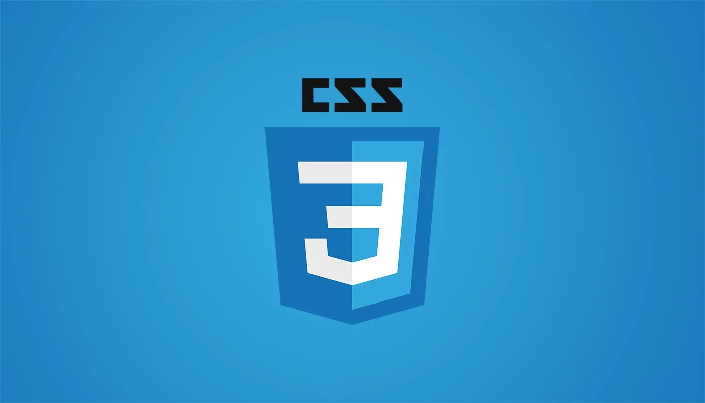

Colors using CSS
This is a Paragraph
CSS Attributes
HTML Colors Names
HTML Color Picker
Margins and Paddings
Padding is extra space on the inside of the element.
Padding top
Padding-top is extra space on the inside to the top of the element.
Padding right
Padding-right is extra space on the inside to the right of the element.
Padding bottom
Padding-bottom is extra space on the inside to the bottom of the element.
Padding left
Padding-left is extra space on the inside to the left of the element.
Padding all sides using single attribute
Padding all sides.
Margin
Margin is extra space on the outside of the element.
Margin top
Margin-top is extra space on the top outside of the element.
Margin right
Margin-right is extra space on the outside to the right of the element.
Margin bottom
Margin-bottom is extra space on the outside to the bottom of the element.
Margin left
Margin-left is extra space on the outside to the left of the element.
Margin all sides using single attribute
Margin all sides.
Negative Margin
Negative Margin-top is extra space in the oppsite direction on the top outside of the element.
Display and Floats
Floats
- Home
- About
- Contact Us
- Blogs
You can use the display and float CSS attribute to change the way that elements on your website are displayed on the screen.
Display
- Home
- About
- Contact Us
- Blogs
You can use the display and float CSS attribute to change the way that elements on your website are displayed on the screen.
item1
item2
CSS display property values
Position - Static, Relative, Absolute, Fixed
Static
Relative
Absolute
Fixed
Look out for Fixed text "CSS learning" on the page
CSS learning
Shadow, Opacity and Border Radius
Opacity
CSS Tutorial

Text-Shadow
CSS Tutorial
Multiple Shadow
CSS Tutorial
Border Around Text
CSS Tutorial
Box-Shadow
CSS Tutorial
Border Radius
CSS Tutorial
Border Radius 50px
CSS Tutorial
Border Radius 50%
CSS Tutorial
Texts and Fonts
This CSS Learning tutorial is inspired from Youtube channel "Mike Dane"
This CSS Learning tutorial is inspired from Youtube channel "Mike Dane"
This CSS Learning tutorial is inspired from Youtube channel "Mike Dane"
This CSS Learning tutorial is inspired from Youtube channel "Mike Dane"
This CSS Learning tutorial is inspired from Youtube channel "Mike Dane"
CSS web safe fonts